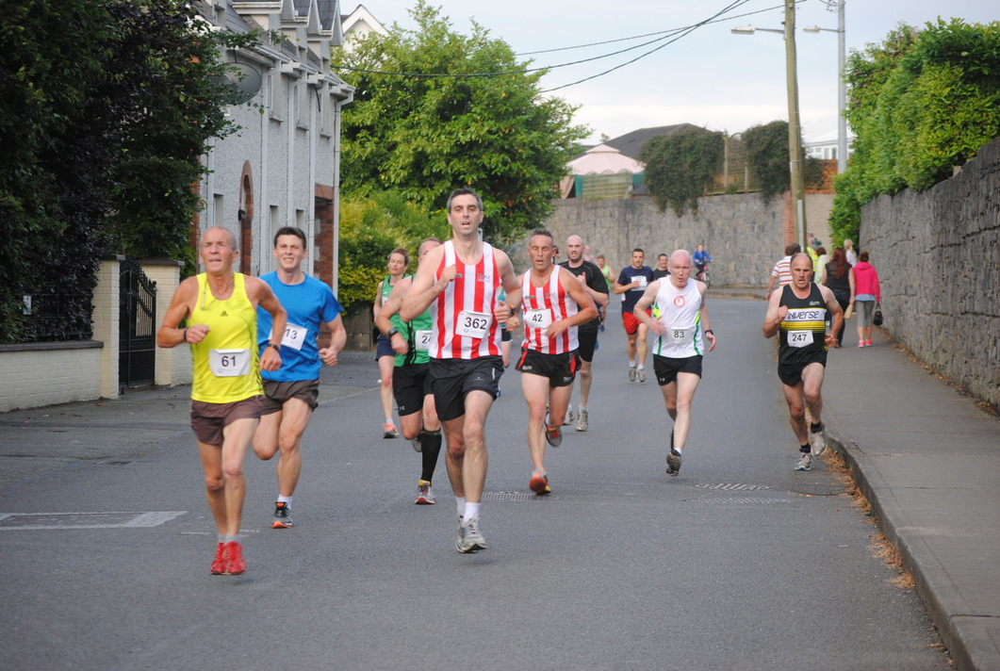

What the hell is he going to do now? Joe doesn’t have anywhere to keep a stolen taxi, and he can’t get arrested because he has to get to work!
“OH MY GOD I HAVE TO GET TO WORK” Joe shouts.
Now in full panic mode, Joe tries desperately to think of a way to get out of this traffic jam and get to his job.
A small amount of median space opens to Joe’s left, but he could also make it to work at a run if he abandoned the taxi.

★★★